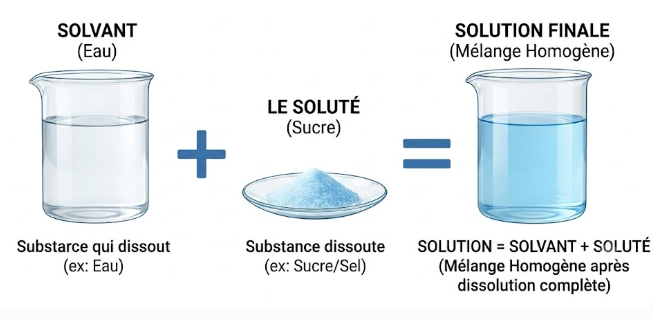
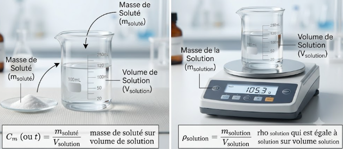
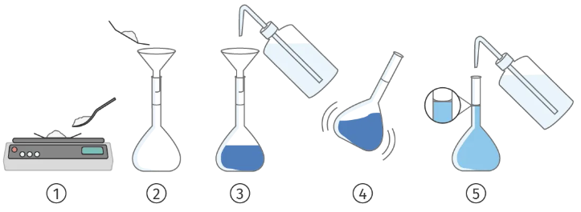
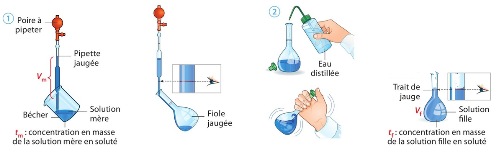
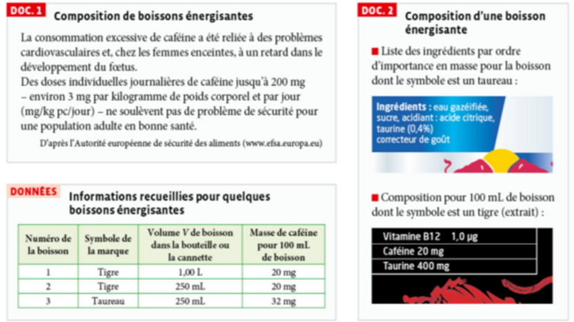
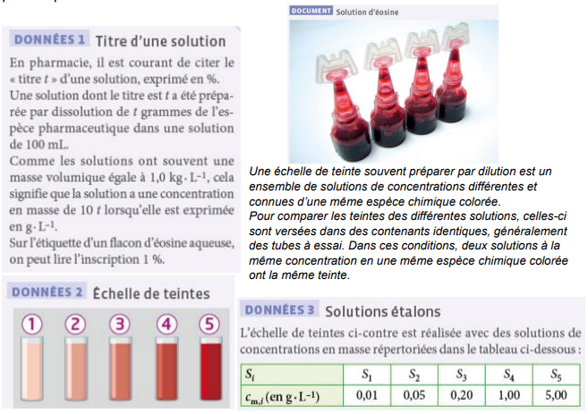
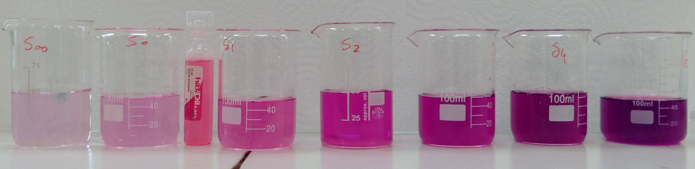

1. Solution : solvant, soluté
Qu'est-ce qui différencie toutes ces eaux minérales ?
À retenir

Solution = solvant + soluté(s)
Une solution est le mélange liquide homogène obtenu lorsque l'on introduit une ou plusieurs espèces chimiques (molécules ou ions) dans un autre liquide majoritaire.
Le liquide majoritaire dans la solution est appelé le solvant. L'espèce (ou les espèces) dissoute(s), minoritaire(s), est (sont) appelée(s) le ou les soluté(s).
Question – Critère de distinction
📝 QCM2. Concentration en masse d'un soluté
a. Concentration en masse (titre massique)
La concentration en masse (Cm) ou titre massique (t) d'une solution en une espèce chimique dissoute représente la masse de soluté dissoute dans un litre de solution.
b. Masse volumique de la solution
La masse volumique ρsolution d'une solution a la même unité que la concentration massique, mais il s'agit de la masse de la solution et non de la masse de soluté.

Calculateur – Concentration en masse
Entre deux des trois grandeurs pour calculer la troisième :
3. Dissolution d'une espèce moléculaire ou ionique
a. Qu'est-ce que la dissolution ?
La dissolution est le processus par lequel une substance solide, liquide ou gazeuse, mise au contact d'un liquide, passe à l'état de solution (les entités du soluté se dispersent de façon homogène dans le solvant).

- Peser la masse de soluté souhaitée (balance).
- Introduire le solide dans la fiole jaugée (à l'aide d'un entonnoir).
- Ajouter de l'eau distillée jusqu'aux ⅔ environ de la fiole.
- Agiter jusqu'à dissolution complète du solide.
- Compléter avec de l'eau distillée jusqu'au trait de jauge (à l'aide d'une pissette), ajustement au ménisque.
b. Masse de soluté à dissoudre
Pour préparer une solution de volume V contenant un soluté à la concentration en masse Cm, la masse de soluté à dissoudre est :
c. Solution saturée
Une solution est dite saturée lorsqu'elle ne peut plus dissoudre de soluté supplémentaire : tout ajout de soluté reste alors sous forme non dissoute (solide non dissous au fond du récipient, par exemple). La concentration correspondante est appelée concentration maximale Cmax.
Application — Dissolution et saturation
📝 QCM4. Dilution d'une solution
a. Qu'est-ce que la dilution ?
La dilution consiste à diminuer la concentration d'une solution (dite solution mère) en y ajoutant du solvant, afin d'obtenir une solution fille moins concentrée.

b. Grandeurs qui changent ou non au cours de la dilution
- Ne change pas : la quantité (la masse) de soluté dissous, qui est seulement répartie dans un plus grand volume.
- Change : le volume total de la solution (augmente) et la concentration en masse du soluté (diminue).
c. Grandeurs caractéristiques d'une solution
- La concentration en masse (ou titre massique) Cm (en g·L⁻¹)
- La masse volumique ρsolution (en g·L⁻¹)
- Des grandeurs liées comme la couleur (échelle de teinte) ou la conductance
d. Facteur de dilution
Le facteur de dilution F est le rapport entre la concentration de la solution mère et celle de la solution fille (ou, de manière équivalente, le rapport entre le volume de solution fille et le volume de solution mère prélevé) :
e. Protocole expérimental d'une dilution
- Prélever, avec une pipette jaugée munie d'une poire à pipeter, le volume Vm de solution mère calculé.
- Verser ce volume dans une fiole jaugée de volume Vf.
- Compléter avec de l'eau distillée jusqu'au trait de jauge, puis homogénéiser (agiter).
f. Échelle de teinte
Une échelle de teinte est une série de solutions de concentrations connues et croissantes, d'une espèce colorée. Elle permet de déterminer par comparaison visuelle (couleur) la concentration approximative d'une solution de concentration inconnue.
Calculateur – Facteur de dilution et volume à prélever
Activité 1 p40 : Caféine dans les boissons énergisantes
Objectifs : identifier le soluté et le solvant à partir de la composition ou du mode opératoire de préparation d'une solution. Distinguer la masse volumique d'un échantillon et la concentration d'un soluté au sein d'une solution.
🔎 Comment déterminer le volume maximal de boisson énergisante à la caféine que nous pouvons boire afin d'éviter ces risques ?
Documents

1. S'approprier
2. Réaliser
3. Analyser-Raisonner
cm = msolution/Vsoluté ; cm = msoluté/Vsolution ; cm = msolution/Vsolution ; cm = msoluté/Vsoluté
4. Valider
Activité 2 : Contrôle du travail d'un fabricant
À compléter avec l'application : remplir la fiche de cours partie 2.
Simulation – Concentration d'une solution
🔬 SIMULATION🧭 Mode d'emploi
- Ouvrez l'onglet « Solutés » de la simulation et choisissez un soluté (ex : chlorure de cobalt(II)).
- Ajoutez progressivement du soluté à l'aide de la cuillère et observez l'évolution de la couleur et de la valeur de concentration affichée.
- Continuez à ajouter du soluté jusqu'à observer un dépôt au fond du bécher (solution saturée).
- Passez à l'onglet « Dilutions » : ajoutez de l'eau à une solution déjà préparée et observez l'évolution de la concentration.
- Répondez aux questions ci-dessous au fur et à mesure de votre manipulation.
Questions – Simulation concentration
🔬 SIMULATION2. On applique la relation Cm = msoluté / Vsolution. Par exemple, pour m = 10 g dissous dans V = 0,50 L, on retrouve Cm = 10 / 0,50 = 20 g·L⁻¹, cohérent avec la valeur affichée par la simulation.
3. Au-delà de l'apparition du dépôt, la solution est saturée : la concentration n'augmente plus, elle reste égale à la concentration maximale de dissolution (concentration de saturation). Le soluté ajouté en excès reste sous forme solide, non dissous, au fond du bécher.
4. Ajouter de l'eau (sans ajouter de soluté) dilue la solution : le volume augmente alors que la quantité de soluté reste inchangée, donc la concentration diminue. C'est cohérent avec la relation tm × Vm = tf × Vf (conservation de la quantité de soluté lors d'une dilution).
5. Non, deux solutés différents à la même concentration n'ont pas nécessairement la même intensité de couleur : chaque espèce chimique possède sa propre couleur caractéristique. L'intensité colorée dépend donc à la fois de la concentration et de la nature du soluté (notion que vous retrouverez avec les échelles de teinte et la spectrophotométrie).
TP4 : Dissolution-Coca
À faire avant le TP4 : test sur la verrerie en laboratoire (blouse obligatoire)
Mesure de la masse de sucre dans une boisson sucrée
Pour comprendre cette différence, nous allons vérifier la composition en sucre d'une boisson.
Document 1 : Information générale
Certaines canettes de 33 cL de boissons sans alcool peuvent contenir jusqu'à près de 40 g de sucre. Le sucre est souvent le soluté largement majoritaire.
Pour simplifier, on peut alors considérer ces boissons dégazées comme des solutions aqueuses sucrées.
Ce qu'on appelle « sucre » dans le langage courant est le saccharose.
Une canette de soda vide pèse 28 g, pleine elle pèse 372 g.
Document 2 : Masse volumique
La masse volumique ρ d'un liquide est le rapport entre la masse totale m du liquide et le volume V de celui-ci :
On considère que la masse volumique de l'eau pure à 20 °C est de 1,00 g·mL⁻¹.
Document 3 : Concentration massique
La concentration massique Cm d'une solution est égale à la masse de soluté dissous par litre de solution :
Document 4 : Définition de la courbe d'étalonnage
Une courbe d'étalonnage permet de faire un lien graphique entre deux grandeurs mesurables. Elle permet de trouver une valeur inconnue d'un échantillon en la comparant avec un ensemble de valeurs connues appelé étalons.
La série de mesures étalons nécessaires pour établir la courbe permet d'avoir une meilleure précision sur le résultat final que si l'on réalise une mesure unique.
Document 5 : Protocole de la dissolution
- Poser un bécher sur la balance puis tarer.
- Peser la masse souhaitée de soluté en l'introduisant dans le bécher.
- Dissoudre le soluté dans un minimum de solvant.
- Peser une fiole jaugée vide du volume final souhaité (tarer si possible).
- Introduire la solution dans la fiole jaugée à l'aide d'un entonnoir.
- Rincer plusieurs fois à l'aide du solvant de manière qu'il ne reste plus de soluté dans le bécher.
- Compléter environ un tiers de la fiole jaugée avec le solvant puis agiter doucement pour dissoudre le solide.
- Compléter la fiole avec le solvant jusqu'au trait de jauge : le bas du ménisque doit être situé au niveau du trait de jauge.
- Peser la solution, noter la masse msolution d'eau sucrée.
- Fermer la fiole à l'aide d'un bouchon, puis agiter en retournant la fiole plusieurs fois pour homogénéiser la solution.
Partie 1 : Réalisation d'une courbe d'étalonnage
Document 6 : Tableau à compléter
| N° de la solution étalon | 0 | 1 | 2 | 3 | 4 | 5 | 6 | 7 | 8 |
|---|---|---|---|---|---|---|---|---|---|
| Concentration massique en sucre recherchée (g/L) | 0 | 50,0 | 100,0 | 150,0 | 200,0 | 250,0 | 300,0 | 350,0 | 400,0 |
| Volume de la solution d'eau sucrée (mL) | 100,0 | 100,0 | 100,0 | 100,0 | 100,0 | 100,0 | 100,0 | 100,0 | 100,0 |
| Masse de sucre à dissoudre (g) | 0 | ||||||||
| Masse volumique de l'eau sucrée (g/mL) | 1,00 |
Partie 2 : Utilisation de la courbe d'étalonnage
TP5 : Dosage d'une solution très foncée — exercice n°52 p57
(blouse obligatoire)
Documents

Répondre aux questions suivantes
Test – Qu'est-ce qu'une solution ?
📝 QCMExercice – Solvants et solutés
INTERACTIFPour chaque solution, indique le solvant et le ou les soluté(s) :
| Solution | Solvant | Soluté(s) |
|---|---|---|
| Café | ||
| Eau de mer | ||
| Vin | ||
| Eau gazeuse | ||
| Lait | ||
| Eau de toilette |
| Solution | Solvant | Soluté(s) |
|---|---|---|
| Café | Eau | Caféine, arômes, tanins… |
| Eau de mer | Eau | Chlorure de sodium (Na⁺, Cl⁻) et autres sels minéraux |
| Vin | Eau | Éthanol, arômes, polyphénols… |
| Eau gazeuse | Eau | Dioxyde de carbone CO₂ (gaz dissous), sels minéraux |
| Lait | Eau | Lactose, sels minéraux (les matières grasses/protéines forment plutôt une émulsion) |
| Eau de toilette | Éthanol | Molécules odorantes (parfum) |
Exercice — Identifier solvant et soluté
📝 QCMExercice — Concentration en masse d'une eau sucrée
INTERACTIFExercice – Choisir la verrerie adaptée
INTERACTIFPour préparer une solution par dissolution (volume précis), quelle verrerie utilise-t-on pour chaque étape ? Clique sur la bonne réponse :
Exercice – Solution de glucose
INTERACTIFQue peut-on dire de cette solution de glucose, sachant que la masse volumique du glucose pur est ρglucose = 1544 g·L⁻¹ ?
Exercice – Dilution d'une solution de diiode
INTERACTIFExercice — Masse de soluté à peser
INTERACTIFExercice – Concentration maximale du chlorure de sodium
INTERACTIF2. Masse maximale pour 50,0 mL :
Exercice – TP4 : dosage par étalonnage (échelle de teinte)
INTERACTIFÀ partir d'une solution mère Sm de concentration en masse tm = 1,0 g·L⁻¹, plusieurs groupes ont préparé par dilution une gamme de solutions filles Sf1 à Sf7, formant une échelle de teinte.

| Solution fille | Sf1 | Sf2 | Sf3 | Sf4 | Sf5 | Sf6 | Sf7 |
|---|---|---|---|---|---|---|---|
| Volume mère Vm (mL) | 30 | 20 | 30 | 20 | 10 | 5 | 5 |
| Volume d'eau Veau (mL) | 20 | 30 | 70 | 80 | 90 | 95 | 195 |
| Volume fille Vf (mL) | 50 | 50 | 100 | 100 | 100 | 100 | 200 |
| Facteur de dilution F = Vf/Vm | 1,6 | 2,5 | 3,3 | 5 | 10 | 20 | 40 |
| Concentration en masse t (g·L⁻¹) | 0,6 | 0,4 | 0,3 | 0,2 | 0,1 | 0,05 | 0,025 |
– Comparer la teinte de la solution de concentration inconnue à celles des solutions de l'échelle de teinte.
– En déduire un encadrement de la concentration en masse de la solution inconnue, à partir des concentrations des deux solutions étalons encadrant sa teinte.
Exercice — Dilution d'une solution proche de la saturation
INTERACTIFExercice type Bac — Préparer une solution de désinfection
RÉDACTION🔓 Escape Game — Le labo verrouillé
17h32. La sonnerie a retenti et le professeur a fermé la salle de chimie… avec votre sac à l'intérieur ! Par chance, la porte est équipée d'un digicode à 4 chiffres. Quatre indices, laissés sur les paillasses, correspondent aux quatre grandes idées du chapitre sur les solutions aqueuses. Résolvez-les dans l'ordre pour reconstituer le code et sortir avant la fermeture du lycée à 18h00 !
Cadenas 1 — Solvant, soluté(s)
I. SolutionCombien cette solution contient-elle de solutés différents ? (le solvant ne compte pas). Entrez ce nombre.
Cadenas 2 — Concentration en masse
II. ConcentrationCalculez la concentration en masse t (en g·L⁻¹) de cette solution, puis entrez la partie entière du résultat.
Cadenas 3 — Dissolution & saturation
III. DissolutionQuelle masse supplémentaire (en g, arrondie à l'entier) peut-on encore dissoudre dans cette fiole sans dépasser la saturation ?
Cadenas 4 — Dilution & étalonnage
IV. DilutionCalculez le facteur de dilution F entre ces deux solutions, et entrez sa valeur.
🚪 Digicode de la porte
Reconstituez le code à 4 chiffres, dans l'ordre des cadenas, puis appuyez sur « Ouvrir la porte ».
Formules clés
- Cm(soluté) = msoluté / Vsolution
- ρsolution = msolution / Vsolution
- msoluté = Cm × V
- F = tm / tf = Vf / Vm
Vocabulaire
- Solvant : liquide majoritaire
- Soluté : espèce dissoute
- Saturation : limite de dissolution
- Solution mère / fille : avant / après dilution
📚 Exercices à faire en autonomie
p49 n°1, 2, 3, 4, 6 et 7 – p50 n°15, 16, 21, 22, 23 et 24 – p51 n°33, p52 n°37-38, p54 n°46, p55 n°49 et p57 n°52
- Solution
- Mélange liquide homogène obtenu lorsqu'on introduit une ou plusieurs espèces chimiques (molécules ou ions) dans un liquide majoritaire.
- Espèce chimique
- Ensemble d'entités identiques (atomes, ions ou molécules), dissoutes ou non ; c'est ce qui définit la nature du soluté.
- Mélange homogène
- Mélange dont les constituants ne sont pas distinguables, même au microscope optique — caractéristique d'une solution.
- Solvant
- Liquide majoritaire d'une solution, dans lequel est dissous le soluté.
- Soluté
- Espèce chimique dissoute dans le solvant. Peut être liquide, solide ou gazeux, moléculaire ou ionique.
- Concentration en masse Cm (titre massique t)
- Masse de soluté dissoute dans un litre de solution : Cm = msoluté / Vsolution (en g·L⁻¹).
- Masse volumique de la solution ρsolution
- Masse de la solution (solvant + soluté) rapportée à son volume : ρsolution = msolution / Vsolution. On a toujours Cm(soluté) ≤ ρsolution.
- Dissolution
- Processus par lequel une substance solide, liquide ou gazeuse mise au contact d'un liquide passe à l'état de solution.
- Saturation
- État d'une solution qui a atteint la concentration maximale de soluté qu'elle peut dissoudre ; au-delà, le soluté ne se dissout plus (dépôt visible).
- Concentration maximale Cmax
- Concentration correspondant à l'état de saturation d'une solution : au-delà de cette valeur, le soluté ajouté ne se dissout plus.
- Dilution / Facteur de dilution F
- Opération consistant à diminuer la concentration d'une solution en ajoutant du solvant. F = tm / tf = Vf / Vm (sans unité).
- Solution mère / Solution fille
- La solution mère est la solution de départ, plus concentrée ; la solution fille est obtenue après dilution de la solution mère.
- Pipette jaugée
- Instrument de verrerie, utilisé avec une poire à pipeter, permettant de prélever un volume précis et fixe de liquide.
- Poire à pipeter
- Accessoire utilisé avec la pipette jaugée pour prélever un liquide par aspiration, sans jamais pipeter à la bouche.
- Fiole jaugée
- Instrument de verrerie permettant d'ajuster précisément, au trait de jauge, le volume final d'une solution.
- Trait de jauge
- Repère gravé sur une fiole jaugée ou une pipette jaugée, indiquant le volume exact à atteindre.
- Bécher
- Verrerie donnant des volumes approximatifs (rinçage, transferts) ; non adaptée aux mesures précises de volume.
- Éprouvette graduée
- Verrerie permettant une mesure approximative d'un volume de liquide, plus précise qu'un bécher mais moins qu'une fiole ou une pipette jaugée.
- Eau distillée
- Eau purifiée utilisée pour compléter une solution jusqu'au trait de jauge, sans introduire d'espèces chimiques supplémentaires.
- Échelle de teinte
- Série de solutions de concentrations connues et croissantes d'une espèce colorée, permettant de déterminer par comparaison visuelle la concentration approximative d'une solution inconnue.
- Gamme d'étalonnage
- Ensemble de solutions de concentrations connues, préparées par dilution, servant de référence pour déterminer la concentration d'une solution inconnue (par comparaison de teinte ou de masse volumique).
- Dosage
- Technique expérimentale permettant de déterminer la concentration inconnue d'une espèce chimique en solution.
🎬 Qu'est-ce qu'une solution ? Soluté ? Solvant ?
Paul Olivier · 2 min 26
🎬 Concentration massique
Paul Olivier · 4 min 29
🎬 Dilution & dissolution
Paul Olivier · 6 min 25
🎬 Quel volume de solution mère prélever ?
Paul Olivier · 4 min 57
🎬 Les solutions aqueuses
Paul Olivier · 13 min 21
🎬 Le facteur de dilution
Paul Olivier · 4 min 01
🎬 Dissolution ≠ Dilution ≠ Fusion
PCCL · 2 min 58
🎬 Schéma bilan – Solutions aqueuses, un exemple de mélanges
Hatier · 5 min 06
🎮 Application — Concentration en masse
Hatier.
🔬 PhET — Concentration
Simulation interactive, en français.